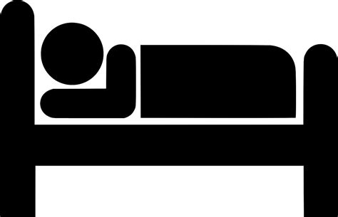

The New Year
Yet again, it's been a very, very long time since I updated my site. However, this time, I have a reason!
Since early summer, I've been having a number of health issues that have prevented me from doing almost anything other than work, and sleeping. It's been a long bumpy ride, but I believe after many, many visits with my various doctors, we've arrived at a root cause, and have a path forward that won't affect my ability to be productive and spend time with my family.

That being said, I plan on being much more productive this year. My wife is really good at writing down things on paper, and making lists and using calendars, but that's just not now my brain works. I mainly live in Obsidian MD, as I have a terrible memory, and that's the place that I tend to drop all my notes and stream of consciousness ideas. My rough outline for personal projects for the year, in no specific order are:
- Add RSS support to Markerator
- Come up with a Decision Tree editor for Consequencity
- Don't port Consequencity to Godot 4, even though it would be nice to take advantage of all those .Net 8 goodies.
- Finish the kids treehouse (It's 70% done already)
- Once the next release of Dino comes out, honestly attempt to daily drive my PinePhone Pro. I've made attempts at this before, but this time I hope it sticks
- Finish the kids Ninja Obstacle course in the basement (already started this one!)
- Try to be more present, mindful, and greatful
That's it for me...I'll continue to be here. Hope that 2024 finds you well.